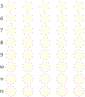

Activity: Drawing Stars
We will draw stars by connecting up the end points,
and see what kind of shapes we get,
6-Pointed Star
| Draw a 6-pointed star: |
Did you notice that it is two triangles?
| Now draw it like this: |
It is three lines!
Why do 2 triangles OR 3 lines make a 6-pointed star?
- A triangle has three corners, so 2 × 3 = 6
- A line has two ends, so 3 × 2 = 6
7-Pointed Star
How many ways can we make a 7-pointed star?
Connecting every 2nd corner |
Connecting every 3rd corner |
I could not make it out of only lines or only triangles.
(Well, I could draw 7 lines from the center outwards, but we are only using the end points here, not the central point).
And when I started drawing I kept going around and around until I met up with the start again.
Why is 7 so different to 6?
6 can be made from other shapes, but 7 goes around and around until it joins up again.
Could it be because 7 is a prime number and 6 is a composite number?
What happens when we divide 7 by 2 ... is there a remainder?
What about when we divide 7 by 3?
From 5-Pointed Stars to 12-Pointed Stars
Now you can try them yourself. Try to make stars with 5, 6, 7, 8, 9, 10, 11 and 12 points. Make as many of each type as you can. (Hint: try "skip 1 dot", "skip 2 dots", etc) Think about numbers as you make them. (You can print the image on the right to help you ... print two copies so you can try experimenting.) Have fun drawing. |
 |
Conclusions:
Write down what you noticed about each type of star:
| How Many Types |
Interesting Features | |
| 5-Pointed Stars | ||
| 6-Pointed Stars | 2 | Can be made of 2 triangles or 3 lines |
| 7-Pointed Stars | ||
| 8-Pointed Stars | ||
| 9-Pointed Stars | ||
| 10-Pointed Stars | ||
| 11-Pointed Stars | ||
| 12-Pointed Stars |
Bonus: Polygons or Not?
Note: many of these stars are Polygons ... but not all.
As an extra bonus, put the letter "P" on the stars that are polygons.